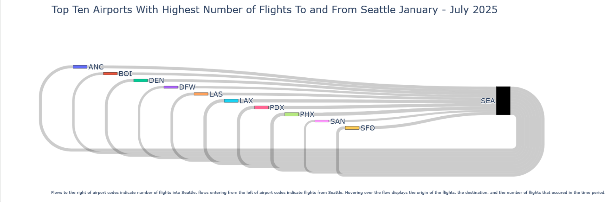
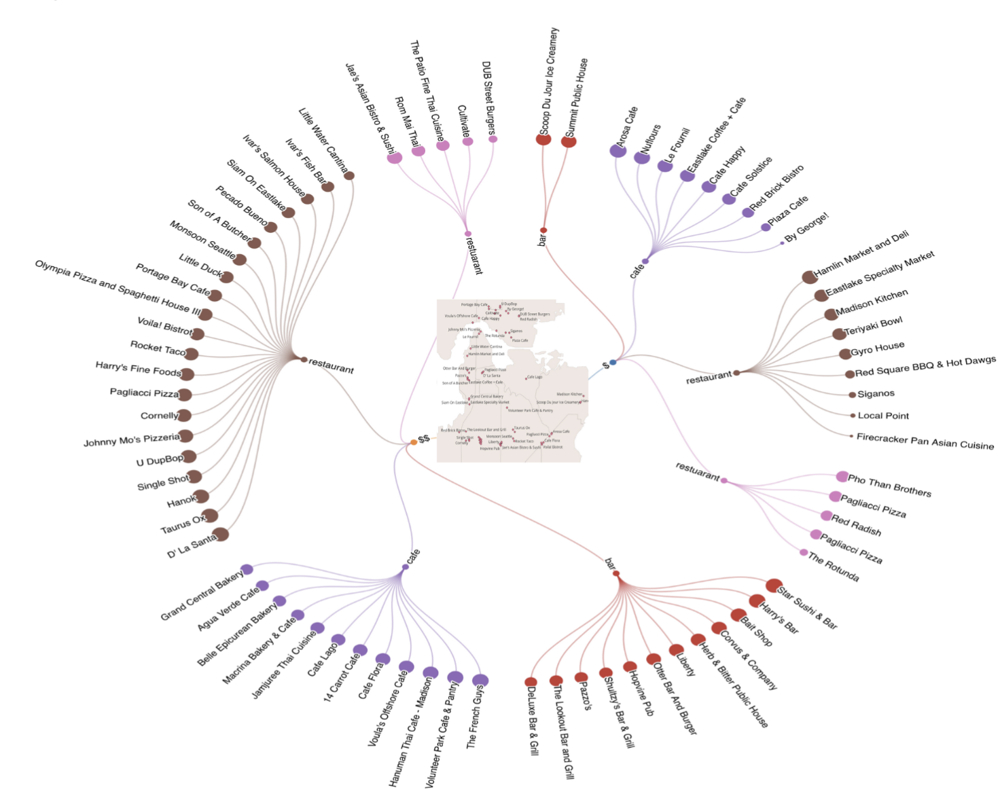
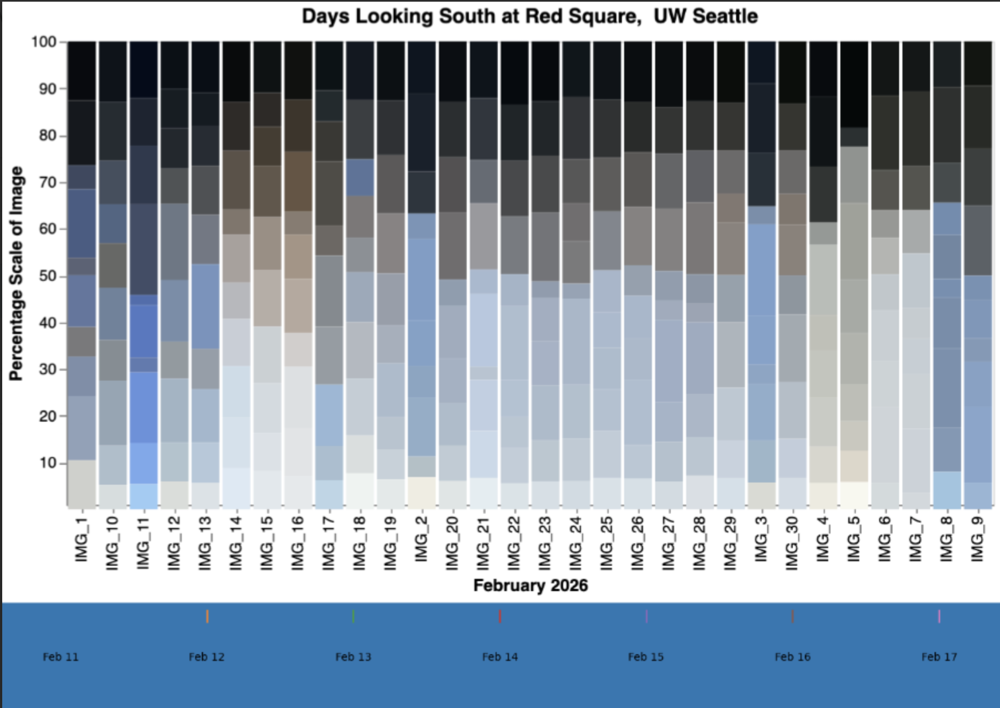

About This Portfolio
Project Overview
This portfolio showcases a comprehensive collection of data visualization and analysis projects. Each project demonstrates various analytical techniques, from demographic analysis and spatial visualization to flow diagrams and urban patterns. The work combines quantitative data analysis with compelling visual narratives to reveal insights about urban environments and human behavior patterns. These projects highlight the integration of data science methodologies with storytelling to communicate complex information effectively.
Location Context
The studies presented in this portfolio focus on specific urban and geographical areas, analyzing patterns of human activity, infrastructure, and demographic distributions. By examining these locations through various data lenses, we uncover meaningful patterns that reflect economic activity, social dynamics, and spatial relationships. The projects include localized demographic insights, movement patterns, and infrastructure analysis that provide a complete picture of the areas under study.
Featured Projects

Sankey Diagram
A comprehensive flow diagram visualization that illustrates the movement and transformation of data across different categories. This visualization technique effectively shows the proportional flows and relationships between source and destination points, providing insights into distribution patterns and resource allocation.

What's Happening in the Town
An urban analysis project that captures real-time activity patterns within a specific town. This visualization reveals where activity concentrates, movement patterns throughout the day, and identifies hotspots of economic and social activity. Essential for understanding urban dynamics and planning.

Grey Anatomy
A detailed anatomical analysis project examining structure and composition. This comprehensive study breaks down complex systems into their constituent parts, providing insights into organizational patterns, hierarchies, and compositional distributions. An essential reference for understanding complex structures.

Happy Places
An exploratory analysis of locations and environments that correlate with positive experiences and well-being. This project identifies spatial patterns and characteristics that contribute to human happiness and satisfaction, examining factors such as accessibility, amenities, community presence, and environmental quality.
Key Insights & Narration
Data Visualization Methodology
Each project employs carefully selected visualization techniques to communicate data insights effectively. From Sankey diagrams that show flow relationships, to heatmaps that reveal spatial patterns, these visualizations are designed to make complex data intuitive and actionable. The choice of visualization type depends on the nature of the data and the specific insights we want to communicate to our audience.
Spatial Analysis and Urban Patterns
Multiple projects in this portfolio utilize spatial analysis techniques to understand how activities and populations distribute across geographic areas. By mapping data onto physical locations, we can identify clusters, patterns, and anomalies that might not be apparent in tabular data. This geographical perspective is crucial for urban planning, business strategy, and policy development.
Flow and Movement Analysis
The Sankey diagram project exemplifies how flow visualizations can reveal complex relationships and movements. Whether tracking resource allocation, user journeys, or material flows, these diagrams show both the magnitude and direction of movements, enabling stakeholders to understand distribution patterns and identify optimization opportunities.
Demographic and Behavioral Insights
By analyzing demographic data and behavioral patterns, these projects reveal the composition and characteristics of different populations and areas. Understanding who lives where, how they move, and where they congregate provides essential context for business decisions, social policies, and urban development strategies.
Well-being and Quality of Life Indicators
The "Happy Places" project investigates the intersection of geography and well-being, exploring which locations and characteristics correlate with higher satisfaction and quality of life. This research direction is increasingly important as cities strive to improve livability and create environments where people can thrive.